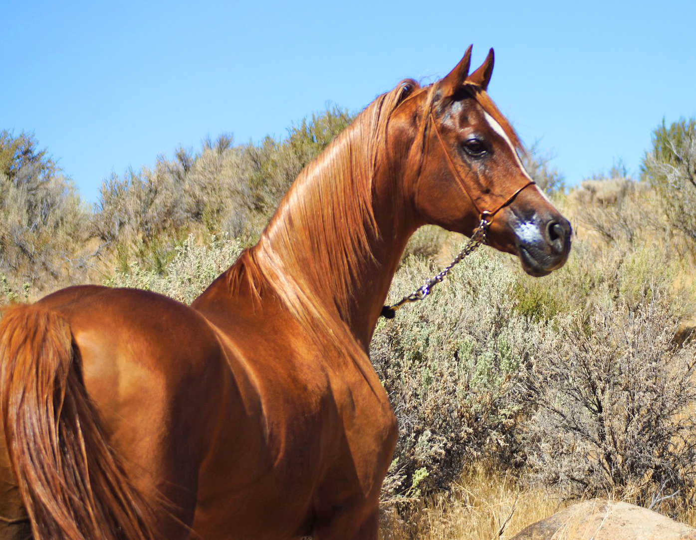
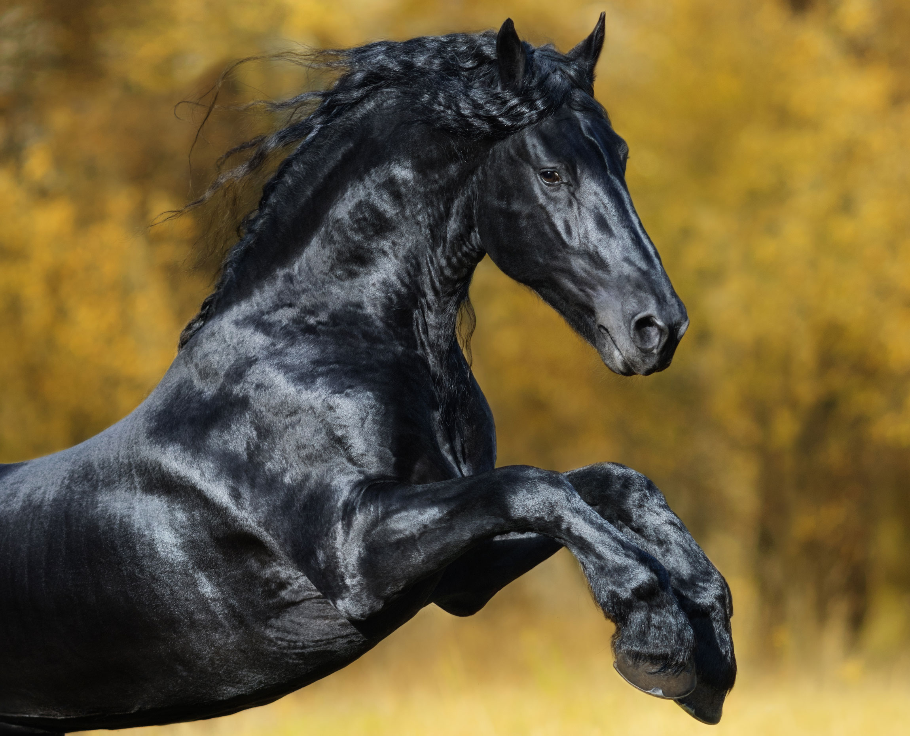
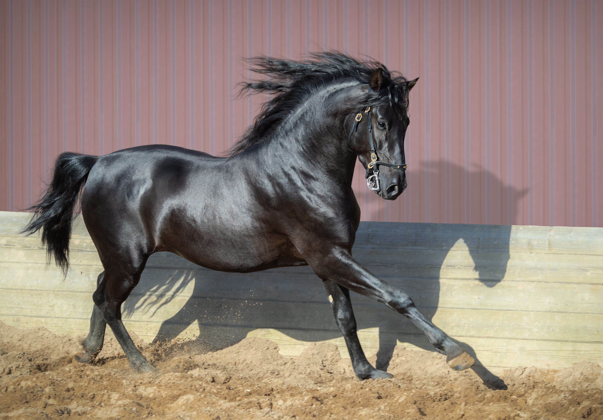
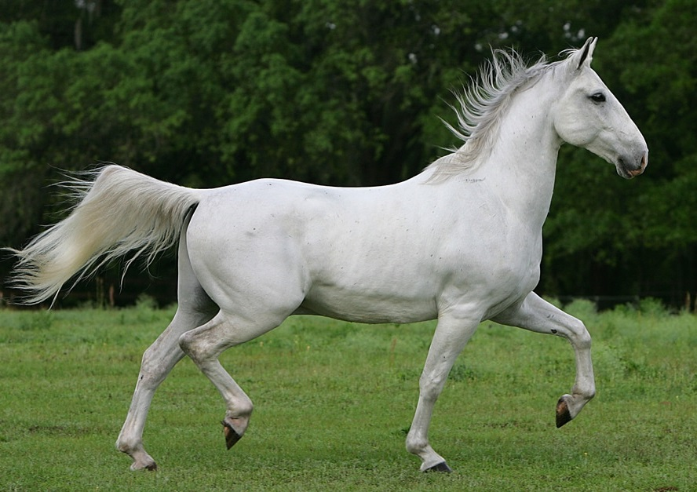

The Akhal-Teke is a horse breed that originates from Turkmenistan. Known for its unique metallic sheen, this elegant horse is recognized for its incredible endurance and agility. The breed's distinctive appearance and sleek, slender build make it stand out in the equine world. Akhal-Tekes are often associated with speed, grace, and a strong bond with their riders.

Arabian: The Timeless Beauty
The Arabian horse is one of the oldest and most celebrated horse breeds in the world. Renowned for its timeless beauty, intelligence, and endurance, the Arabian has left a significant mark in equine history. With its distinctive head shape, high tail carriage, and finely chiseled features, the Arabian exudes an aura of elegance and grace. This breed is not only known for its beauty but also for its versatility and friendly nature, making it a favorite among riders worldwide.

Friesian: Majestic Black Beauties
The Friesian horse, with its majestic black coat and flowing mane, is a breed that captivates onlookers with its beauty and charm. Originating from Friesland in the Netherlands, these horses have a strong and muscular build. Friesians are not only known for their striking appearance but also for their friendly temperament and versatility. Often seen in various equestrian disciplines, these majestic black beauties are a favorite among riders seeking both style and substance.

Andalusian: Graceful and Powerful
The Andalusian horse, originating from the Iberian Peninsula, is renowned for its grace, power, and versatility. With a strong build and elegant movement, the Andalusian excels in both classical dressage and traditional riding disciplines. These horses have a long history of being favored by royalty and are often associated with classical equestrian performances. The Andalusian's intelligence, agility, and striking appearance make it a sought-after breed for riders with a passion for both beauty and performance.

Lipizzaner: Classical Elegance and Heritage
The Lipizzaner, known for its classical elegance and rich heritage, is a breed that has captivated audiences for centuries. Originating from the Spanish Riding School in Vienna, these horses are often associated with classical dressage performances. With their gray coat, compact build, and disciplined movements, Lipizzaners showcase a blend of beauty and skill. The breed's heritage and connection to classical horsemanship make it a symbol of tradition and excellence in the world of equestrian arts.